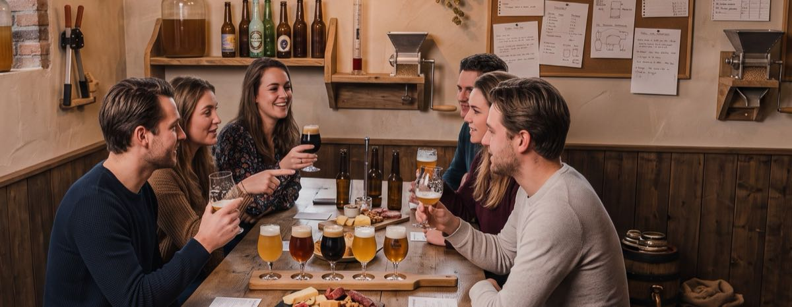

Van je aanmelding tot je eigen bier in de kast
Bierfunding is één avond en één beslissing, met een pakket bier als uitkomst. Hieronder staat de hele route: wat er gebeurt, wanneer je betaalt, en wat je daarvoor terugkrijgt.
De avond zelf
Van binnenkomen tot de uitslag duurt het ongeveer [X] uur. We doen het met [X] mensen — klein genoeg om iedereen aan het woord te laten.
-
Eerst
Binnenkomst en het eerste glas
Je krijgt een korte introductie over wat er die avond op tafel staat en waarom juist deze vier. Geen college — je hebt al bier in je hand.
-
Dan
Vier proefbrouwsels, één voor één
Elk bier komt apart aan bod, met uitleg over het recept en waar we het idee vandaan hebben gehaald. Je proeft ze in dezelfde volgorde als iedereen, zodat je ze onderling kunt vergelijken.
-
Tussendoor
Het gesprek
Voor ons het beste deel. Iedereen proeft anders, en dat hoor je pas als je erover praat. Je hoeft er geen verstand van te hebben — "deze vind ik lekkerder" is een geldig argument.
-
Aan het eind
Stemmen en uitslag
Iedereen brengt één stem uit. We tellen ze ter plekke, dus je weet die avond nog welk bier we gaan brouwen. [Wat gebeurt er bij een gelijk aantal stemmen?]

Je betaalt in twee keer — en dat is het hele punt
Bij de meeste crowdfunding leg je geld in voor iets wat nog bedacht moet worden. Hier is het omgekeerd. Je betaalt pas voor bier op het moment dat je weet wélk bier het is, omdat je zelf hebt meebeslist.
Voor de avond zelf: vier proefbrouwsels, uitleg bij elk, en je stem. Dit bedrag staat los van het bier dat er later uit komt — je koopt een avond, geen krat vooruit. Aanmelden gaat via de CO&CO-webshop.
Pas als de uitslag bekend is, bestel je je pakket van het winnende bier: small, medium of large. Die bestellingen samen betalen het brouwsel. Je betaalt pas nadat wij bevestigen dat er genoeg besteld is — de helft direct, de andere helft als je je pakket ophaalt. Als deelnemer betaal je voor je pakket minder dan de gewone webshopprijs; wil je er later méér van, dan geldt de consumentenprijs. [Is een pakket bestellen verplicht, of mag je ook alleen de avond doen?]
Er geldt een minimumaantal bestellingen. Zijn er vóór [uiterste datum] minimaal [aantal] pakketten besteld, dan gaat het brouwsel door. Worden dat er minder, dan brouwen we niet. Voor je pakket heb je dan nog niets betaald; wat je voor de proefavond betaalde blijft staan, want die avond is geweest. De termijnen staan op de voorwaardenpagina.
Na de avond
Brouwen kost tijd. Je hebt je bier dus niet de week erna in huis — maar je weet wel precies wat eraan komt.
-
Binnen enkele dagen
Je kiest je pakket
Je krijgt een bericht met de uitslag en een link om je pakket te bestellen. Je hebt daar [X dagen] de tijd voor. Daarna weten we hoeveel er gebrouwen moet worden.
-
Daarna
We brouwen — bij Brouwerij Allema in Zwolle
In onze eigen brouwerij passen vier proefbrouwsels, geen tientallen pakketten. Het winnende bier brouwen we daarom op groot formaat bij Brouwerij Allema in Zwolle. Bij ons wordt gekozen, bij Allema wordt op groot formaat gebrouwen.
Vergisten en rijpen kost [X weken], afhankelijk van het biertype. Ondertussen houden we je per e-mail op de hoogte van hoe het ervoor staat.
-
Tot slot
Ophalen bij de brouwerij
Zodra het op fles zit, hoor je wanneer je het kunt komen halen. Ophalen doe je bij de brouwerij; we verzenden niet, dus er zijn ook geen bezorgkosten. Neem je bestelbevestiging en je legitimatie mee. Het bier dat je meeneemt is het bier dat jij hebt gekozen — dat drinkt anders.
Praktisch
Waar en wanneer
Bij onze eigen brouwerij, [precieze plek en adres].
[Datum], inloop vanaf [tijd], we beginnen om [tijd].
Parkeren: [hoe werkt dat ter plekke?]
Of we binnen zitten of buiten bij de brouwerij hangt af van hoe groot de groep wordt. Waar we precies afspreken hoor je bij je aanmelding.
Wat is inbegrepen
Vier proefbrouwsels met uitleg, en [iets te eten erbij? water? een glas mee naar huis?]. Je pakket bier komt daar los bij.
Vanaf 18 jaar
We schenken alcohol, dus deelname is vanaf 18 jaar. Je leeftijd wordt gecontroleerd bij het bestellen in de CO&CO-webshop en, als daar aanleiding voor is, bij binnenkomst.
Kom je met de auto?
Je proeft vier bieren op een avond. Spreek een bob af of regel vervoer — [bereikbaarheid met OV of fiets vanuit Zwolle in één zin].
Nog een vraag?
Mail ons op [e-mailadres]. Wat we formeel vastleggen staat op de voorwaardenpagina.
Meedoen aan de eerste ronde?
Er zijn [X] plekken. Vol is vol.